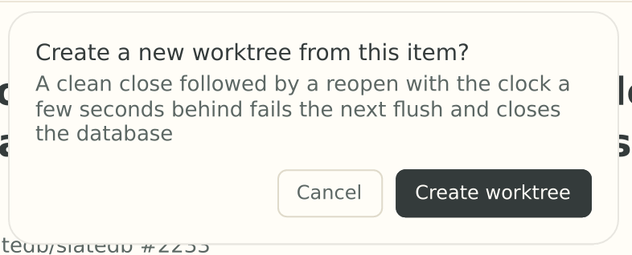

Perch
Perch1. Create a worktree
Open the issue, choose Start Work from its details menu, and confirm with Create worktree. Perch gives the issue its own branch, such as perch/issue-2233.

Starting without an issue? Press Cmd-N (Ctrl-N on Linux) for the new worktree form.
2. Ask the agent to make the change
Describe the fix. Auto-review is the default permission mode. When a command needs your approval, read it in the thread and choose whether to allow it once, save an approval, or deny it. See agent permissions for the other modes.
3. Inspect the diff and commit the changes
In Code, choose Last run to inspect the agent’s diff. You can also have other agents review it.

Commit what you want to publish, in a terminal or by asking the agent. For Claude Code, approve git commit when prompted. Codex can make a plain commit directly.
4. Push and open the pull request
With a commit ahead of the base, click Open pull request…. Check the title and description, then submit. Perch pushes the commits and opens the PR. Uncommitted edits stay in the worktree. See Opening a pull request for drafting options and push errors.